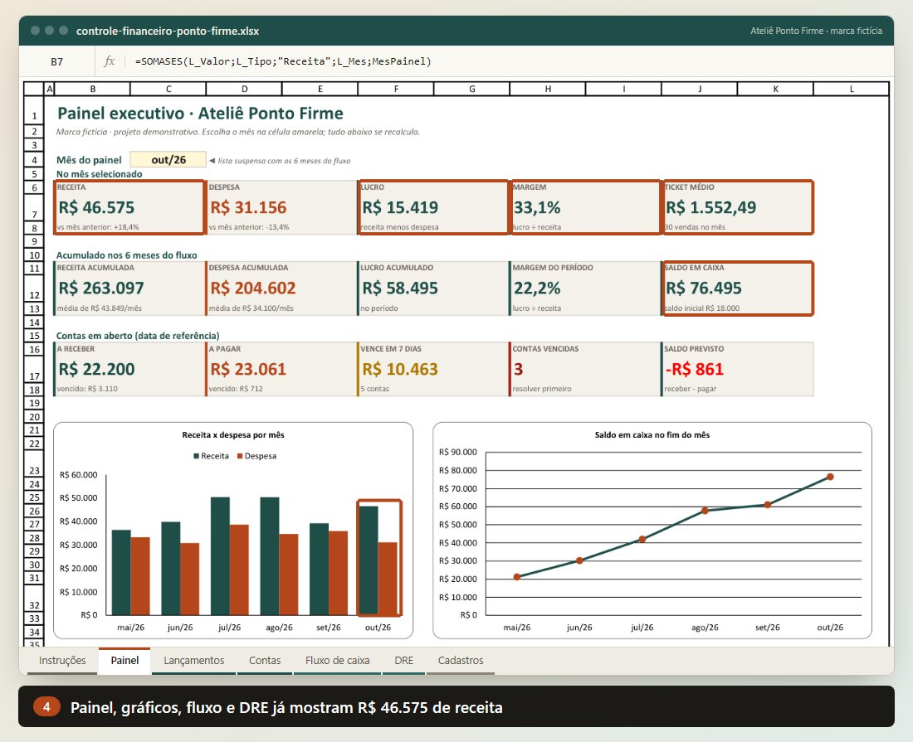

Controle financeiro para pequena empresa: você lança entradas e saídas escolhendo em listas, e o fluxo de caixa, a DRE e o painel com gráficos se recalculam. Vem junto uma versão para produção e frequência da equipe.
Gravado no Excel: um pedido novo lançado e o painel recalculado.
7 abasdo lançamento ao painel
3.963fórmulas, nenhum valor colado
273lançamentos fictícios em 6 meses
0macros: abre sem aviso de segurança
01 · Na prática
Lança um valor e o painel atualiza
Teste aqui com os mesmos números da planilha (outubro do Ateliê Ponto Firme). Na planilha de verdade é igual: digitou na tabela de lançamentos, o resto se refaz.
Receita–
Despesa–
Lucro–
Margem–
ReceitaDespesa
Nenhum lançamento novo ainda.

Outubro fechadoReceita de R$ 38.175, lucro de R$ 7.019, margem de 18,4%.
Primeira linha livre da tabelaA tabela já vem com 800 linhas prontas, com as fórmulas esperando.
Seis campos, quatro com listaData validada, categoria, centro de custo e forma de pagamento em lista suspensa. Valor sempre positivo.
Tudo recalculadoReceita vai a R$ 46.575, lucro a R$ 15.419, e o gráfico de outubro sobe. Fluxo de caixa e DRE também.
02 · Abas
O que tem em cada aba
Prints exportados do próprio Excel, com os dados da demo. Clique na imagem para ver em tamanho real. Embaixo de cada aba, as fórmulas que fazem o trabalho.
Escolha o mês na célula amarela e veja receita, despesa, lucro, margem e ticket médio, com a variação sobre o mês anterior. Abaixo, o acumulado do período e as contas em aberto. Quatro gráficos nativos: colunas, linha, pizza e lucro mensal.
Uma Tabela do Excel com filtro. Você digita seis colunas; tipo, grupo da DRE, mês e valor com sinal são fórmulas protegidas. Categoria fora da lista vira "Revisar" em vermelho.
Vencimento, valor e data de pagamento. A situação sai sozinha: vencido em vermelho, vence em até 7 dias em amarelo, quitado em cinza. Ao lado, o resumo do que entra e do que sai.
Entradas e saídas por categoria, mês a mês, com saldo acumulado, total e média. Mude o mês inicial na aba Cadastros e a janela anda. Um bloco de conferência avisa se algum lançamento ficou de fora.
Como usar em três passos, o que tem em cada aba, como incluir categoria nova e a legenda de cores. A pessoa que vai usar não precisa me ligar para lembrar.
hiperlinkslegenda
03 · Outra versão
Produção e frequência da equipe
Para quem precisa acompanhar peças produzidas, metas, refugo e faltas. Os dados conversam: quem faltou não tem produção no dia, e a assiduidade sai da folha de frequência.
Produção diária: meta proporcional às horas, % da meta em verde, amarelo ou vermelho.
04 · Por dentro
Feita para não quebrar na mão de quem usa
Planilha bonita que alguém estraga na segunda semana não serve. Estes cuidados vêm de fábrica.
Listas suspensas
Categoria, centro de custo, forma de pagamento e códigos de frequência vêm de cadastro. Ninguém digita "aluguel" de três jeitos.
Fórmulas protegidas
As abas são protegidas sem senha: só as células de digitação ficam liberadas. Evita apagar conta sem querer e não tranca o dono.
Nomes definidos
As fórmulas leem L_Valor, L_Mes, MesPainel, em vez de $F$5:$F$804. Qualquer pessoa audita.
Vencimentos à vista
Formatação condicional pela data de referência: vencido em vermelho, próximos 7 dias em amarelo.
Conferência embutida
O fluxo de caixa avisa se há lançamento sem categoria ou fora do período. A DRE lê a mesma base do fluxo, então os totais batem.
Detalhes de acabamento
Moeda em R$, cabeçalhos congelados, impressão em A4 deitado ajustada à largura, cores por tipo de aba.
7.760
fórmulas nas duas planilhas, recalculadas no Excel e varridas uma a uma: nenhum erro (#N/D, #VALOR!, #NOME?). Depois, 77 totais conferidos contra uma conta feita à parte em Python, com o mesmo resultado.
05 · Arquivos
Baixe e abra no seu Excel
Abre no Excel 2010 ou mais novo e no Google Sheets (Arquivo › Importar). Sem macros. Os dados são fictícios.
XLSX
Controle financeiro
Painel, Lançamentos, Contas, Fluxo de caixa, DRE, Cadastros e Instruções
Monto com as suas categorias, centros de custo e indicadores, em Excel ou Google Sheets. Quando a rotina pede, entra macro (VBA) ou Apps Script para importar extrato, gerar relatório ou mandar aviso. Entrego com uma chamada de treinamento e um guia curto.